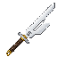

On this page
Discontinued archive: Tensura Myths ended at 0.36.1. No further updates are planned.
A rare weapon from ominous trial vault loot, with the same attack stats as a Hihiirokane Sword.

Stats and obtaining
80 total ordinary player attack damage; 1.6 attack speed. Rare 2% additional ominous-vault reward. Regular vaults do not drop it.
Nullification engraving
Weapon hits instantly shatter barriers, remove skill status effects, and prevent skill activation for 2 seconds. The weapon can attack Spiritual Entities.
Held main-hand attacks, Severance Rush and Counter carry the engraving. Spiritual contact bypasses the spiritual-body Physical reduction, while armor, resistance, dodge and PvP rules still apply.